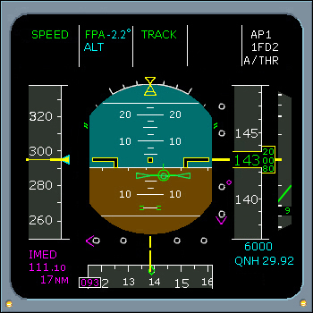

AP/FD Lateral FMAs
TRACK
When the TRK selector is pulled it commands lateral guidance to maintain the FCU's track selected value, and the engaged TRACK annunciation is displayed. The track value can be pre-selected prior to takeoff. When the TRK Selector knob is rotated, it changes the value displayed in the HDG/TRK window.
In flight, the TRK selector may be pre-selected, but must be pulled within approximately 45 seconds, or the track selection value is lost.
|  |